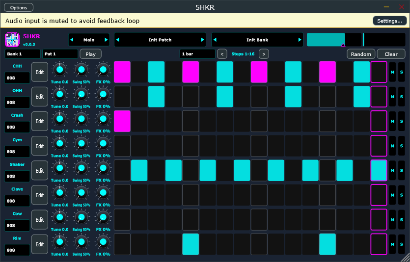
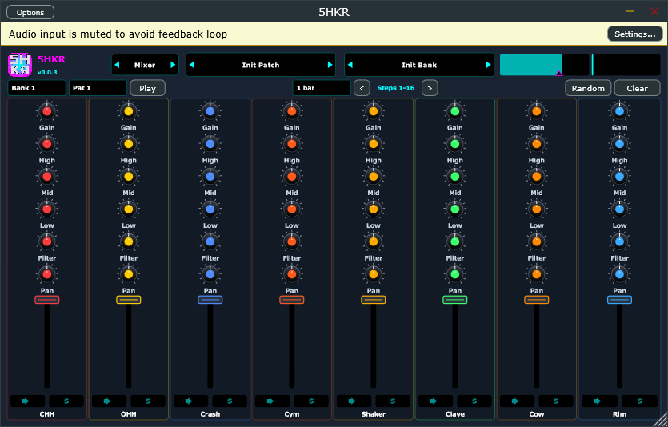
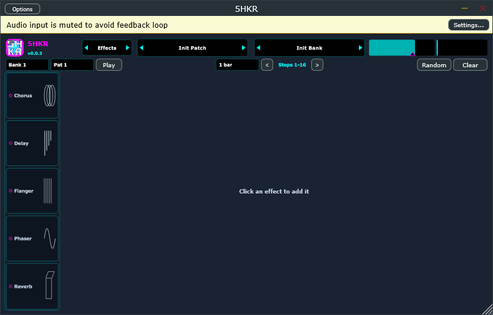
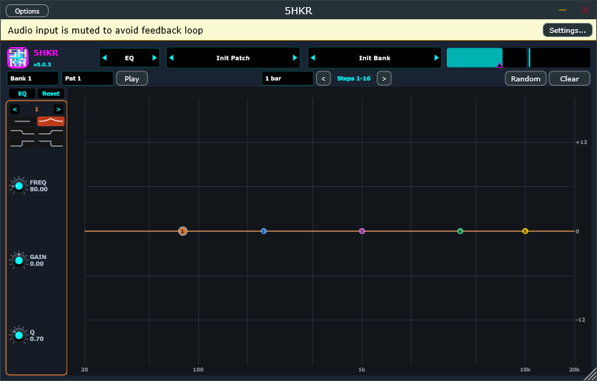
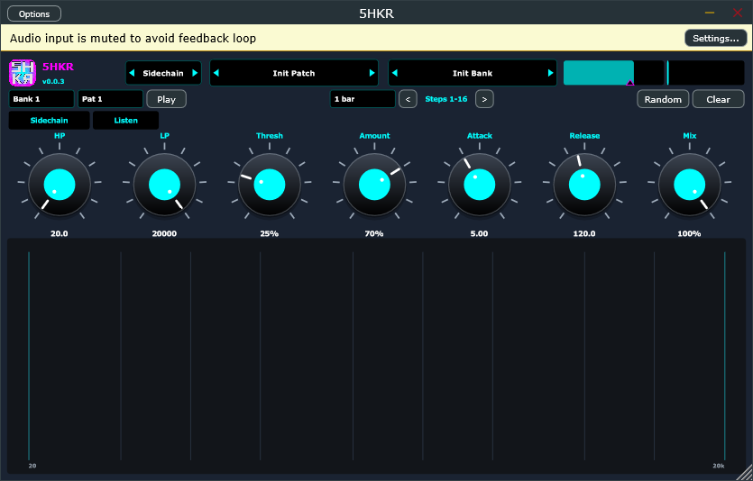
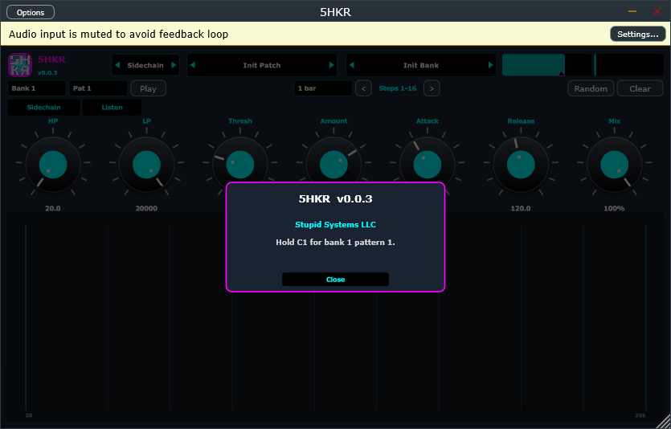

5HKR
Shaker. Perc groove box.
Eight synth lanes on a 16th-note grid, pattern banks, per-lane swing and FX send, delay / reverb / chorus / flanger / phaser, post EQ, and a sidechain duck. Not a sample player.
Main
CHH, OHH, Crash, Cym, Shaker, Clave, Cow, Rim. M / S on the right mute and solo (same as the mixer). The kit menu picks 707 / 808 / 909 / Linn for that lane. Click a cell off → on (cyan) → accent (magenta). Right-click sets that lane’s loop end. Tune, swing, and FX send per lane. Bank / Pat, length 1 / 2 / 4 bars, Random / Clear.

Mixer
One strip per lane. Gain is trim. High / Mid / Low is a 3-band EQ. Filter is a DJ filter (left high-pass, centre off, right low-pass). Pan is constant-power. Mute and solo match Main. The fader is channel level; the thin bar behind it is the lane meter.

Effects
Click a name in the left rail to turn it on. Drag rails to reorder. Chorus, Delay, Flanger, Phaser, Reverb, each with its own Mix. Lane FX must be up or the chain is silent.

EQ
Post-effects 5-band EQ. Toggle EQ, drag nodes for frequency and gain, scroll for Q. The inspector sits on the left.

Sidechain
Ducks the lanes from the plugin audio input. Off until you turn it on. HP / LP pick the key, Listen previews it. Thresh, Amount, Attack, Release, Mix. The plot under the knobs is that filtered key. Title bar chevrons cycle the pages. Click 5HKR for About.

